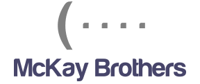

Education

Master of engineering in Computer Science
IMT Atlantique, Brest, FRANCE
Computer Science, Data mining, Computer Vision, Aide à la décision.
Consulting, Electronic, Management, Economic, Signal processing.
More
Info
Machine Learning , Algorithms and Data Structure
Stanford University ,CA, USA
Bachelor of science in Physics
Aix-Marseille University, Marseille, FRANCE
Valedictorian on the 3 years of the Bachelor.
Thermodynamics, Theory of relativity, Quantum mechanics. Celestial mechanics,
Physics of fluids, Physics of solids, computer science, statistical physics,
More Info
Experience

Entrepreneur adventure
Co-founder, Et ça se dit Médecin
Digital marketing, E-commerce
Founder, H O R I Z O N
Spatial telecommunication, Virtual reality
Social network influencer, 115k Likes, advertising marketing:
Facebook link ,
E-commerce website:
Store Link
Concept of a space tourism virtual experience, the solution is to launch a
low earth orbit satellite equipped with cameras to offer a streaming powered by
a
virtual true reality and augmented virtual platform
Website
Computer Science engineer

Research and Development Department
Mckay Brothers LLC, San Francisco Bay Area, Sept 2017 - Sept 2018
End of study internship:
Lead project on a comparative study of latency in a transmission networks by low earth orbit satellites. Building of a constellations generation tool and data roads with an encrypted analysis of performances and a report to explain the methodology and the analysis of the final results. (Backend : Python + Flask, Front-end: HTML/CSS/JS)Others missions:
Automatisation Automatisation project of the information system, worked on CRM tools as Sugar and Odoo (PHP/SQL/AngularJS). Deploying of all script and gui on servers to provided those services to the enterprise. Coding an analysis and frequency allocation tools and scraping script, in Python.Others

Participation to the ACM-ICPC SWERC ,
algorithmics championship organized by IBM and sponsored by Facebook,
Google and Microsoft, Porto, 2015.
More info
Finalist of the engineering challenge, organised by SNCF
french(train transport french company) to around the
“Smart Cities” topic, SNCF Headquarters, Paris, 2016.
Leadership training and certificate, French Navy School ,
Brest, 2016. More
Info
Places visited: San Francisco, New-York, Washington DC, Miami, Las Vegas,
Portland,
Los Angeles, Hawaii, Tunis, London, Porto, Milan, Rome, Budapest.